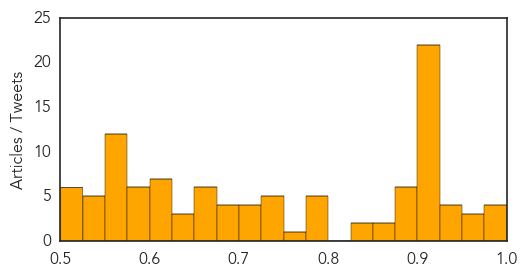

Ebola
30-Day Web Trend
0 alerts, 6 warnings

30-Day Twitter Trend
5 alerts, 0 warnings

Article Locations

Article Confidences

Top Articles:
- 1.000
- Ebola Death Toll Is Now Over 5,000, Mali Quarantines Nearly 100 Possible Contacts Of Nurse Who Died Of Ebola
- 1.000
- Doctor With Ebola Dies in Nebraska Hospital
- 1.000
- Fearful Mali places almost 600 under Ebola surveillance
- 1.000
- Fearful Mali places almost 600 under Ebola surveillance
- 1.000
- Ebola: Panic in Mali as 600 placed under surveillance
- 1.000
- Doctor from Sierra Leone dies from Ebola in US
- 1.000
- Is southern Manitoba ready for Ebola?
- 1.000
- Fearing Ebola surge, Mali widens virus watch
- 1.000
- G20 pledges support to fight Ebola in West Africa
- 1.000
- Dr Martin Salia dies from Ebola after arriving in Nebraska for treatment
- 1.000
- Dr Martin Salia dies from Ebola after arriving in Nebraska for treatment
- 1.000
- Sierra Leone doctor dies of Ebola at Nebraska hospital
- 1.000
- Ebola Kills Second Person in US, With Death of Dr. Martin Salia
- 1.000
- One Surprisingly Simple Way to Beat Ebola (That Isn't as Simple as It Seems)
- 1.000
- Ebola-infected surgeon from Sierra Leone, Dr Martin Salia, dies at US hospital
- 1.000
- You're Much More Likely To Survive Ebola If You Catch It In America
- 1.000
- #Ebola: Mali isolates 600 suspects
- 1.000
- Martin Salia, Doctor with Ebola dies two days after arriving in Nebraska for treatment
- 1.000
- Tourist to SA turned away by US doctor over Ebola fears
- 1.000
- The Chosun Ilbo (English Edition): Daily News from Korea
- 0.999
- Mali fears surge of Ebola, expands watch to 440 people
- 0.999
- Dr. Salia's case raises questions about Ebola test
- 0.999
- Doctor With Ebola Dies at Nebraska Hospital – WebMD
- 0.999
- Ebola patient dies at Omaha hospital
- 0.999
- Nebraska patient case raises questions about Ebola test
- 0.999
- Liberia Sets December 25 Goal: No New Ebola Cases
- 0.999
- Ebola-striken surgeon dies at Nebraska hospital
- 0.999
- NationalJournal
- 0.999
- Liberia Sets December 25 Goal: No New Ebola Cases
- 0.999
- Doctor with Ebola Dies in Nebraska Hospital
- 0.999
- Hospital Reports Surgeon With Ebola In Life-Threatening Condition : Trending News : Jobs & Hire
- 0.999
- Liberia Sets December 25 Goal: No New Ebola Cases
- 0.999
- Why It's Too Early to Forget About Ebola
- 0.999
- Second Ebola patient has died in the United States: Dr. Martin Salia
- 0.999
- Ebola claims Dr. Martin Salia even as others have survived
- 0.999
- Doctor's death marks second U.S. Ebola fatality
- 0.999
- US to screen travelers from Mali for Ebola
- 0.999
- Liberia Sets December 25 Goal: No New Ebola Cases
- 0.999
- Sierra Leone doctor dies of Ebola at Nebraska hospital
- 0.999
- Latest Ebola death shows danger remains
- 0.999
- Enhanced Ebola screening set for Mali travelers
- 0.999
- Surgeon Dies of Ebola in Nebraska
- 0.999
- Ebola Doc Treated in Nebraska Initially Tested Negative for the Virus
- 0.999
- Doctor with Ebola Dies in Nebraska Hospital
- 0.999
- Dr. Martin Salia, the surgeon who contracted Ebola in Sierra Leone, dies in Nebraska hospital
- 0.999
- Ebola Patient Dr. Martin Salia Dies at Nebraska Hospital
- 0.999
- Ebola Screenings to Include Mali
- 0.999
- Doctor’s death marks second U.S. Ebola fatality
- 0.999
- Surgeon hospitalized with Ebola dies in the US
- 0.999
- Ebola Intervention Comes to an End
Showing top 50 articles...
Top Tweets:
- 0.946
- SierraLeone. Ebola: course contre la mort en Sierra Leone http://t.co/0q3jQdktv5
- 0.915
- Consolidated Ebola Virus Disease Preparedness Checklist http://t.co/0hVQ8oJdd5
- 0.906
- Ebola cases in W. Africa in Oct. alone exceeded all other recorded Ebola outbreaks combined. http://t.co/61tylSKKRR
- 0.893
- RT: EbolaResponse: The latest map of Ebola outbreak in WestAfrica with stats for Liberia, Guinea & Sierra Leone http://t.co/jQ…
- 0.797
- Liberia and Sierra Leone. Mobilising youth for Ebola education: SierraLeone and Liberia ebolaresponse http://t.co/HdcRxUr8GA
- 0.769
- Sierra Leone surgeon dies of Ebola in U.S. hospital http://t.co/TlGbGQUXnP
- 0.761
- RT: Smart Ebola analysis from: Improved situation in Liberia could complicate vaccine trials http://t.co/pXqzrc7XeT
- 0.700
- RT: Belle chanson->"Ebola Invisible enemy.L’Afrique a besoin de vaccin, de médicament" http://t.co/WcqyRRjlN1 AfricaStopEb…
- 0.691
- RT: SierraLeone confirmed 534 new Ebola cases this week (10-16 Nov). Patients in north wait days to collect blood sample, mo…
- 0.683
- Guinea. Policy notes on the economic impact of Ebola Virus in Guinea ebolaresponse http://t.co/zzrnIZDUUc
- 0.673
- RT: Fearing Ebola surge, Mali widens virus watch to 440 people http://t.co/NGIKf8Fd1Y
- 0.647
- Despite recent progress Ebola epidemic still severe, core PH interventions can stop it. Must speed & scale up prevention/control measures.
- 0.618
- Do Funerals Spread Ebola? http://t.co/hQzD2BcVWp
- 0.617
- Migrations in West Africa seen as challenge to stopping Ebola http://t.co/HqvsayOpmS
- 0.608
- RT: Via: Ebola Today Could Mean Illiteracy Tomorrow In West Africa http://t.co/nS6n3emu3F
- 0.605
- 5 components of effective Ebola response: incident mgmt., treatment, burial support, infection control in all healthcare systems, comm.
- 0.584
- RT: CDC is assisting Malian government in efforts to contain further spread of Ebola. http://t.co/a4jUmGrEpX
- 0.570
- RT: Seattle rallies with to get phones to aid Ebola data needs in West Africa. @LivingComputers TackleEbola http://…
- 0.554
- RT: Migrations in West Africa seen as challenge to stopping Ebola http://t.co/pCth4Gvgau
- 0.549
- RT: The promotion wanting idiots doing BandAid30 are aware Ebola isn't killing people by starvation, so 'Feed the World' pla…
- 0.536
- RT: Ebola Patient Being Treated in Nebraska Has Died http://t.co/6Sa7PWf6r3
- 0.516
- R.I.P. Dr. Martin Salia. A true hero on Ebola's frontlines. EndEbolaNow WestAfrica https://t.co/ejFRzwgzfx
Unknown
30-Day Web Trend
1 alerts, 0 warnings

30-Day Twitter Trend
1 alerts, 0 warnings

Article Locations

Article Confidences
Top Articles:
- 0.996
- Egyptian woman dies of bird flu, second death in 2014
- 0.994
- UPDATE 1-Egyptian woman dies of bird flu, second death in 2014-ministry
- 0.978
- Bird flu: What threat to humans?
- 0.978
- Bird flu: What threat to humans?
- 0.973
- Legionnaires' disease outbreak in Portugal
- 0.971
- Bird flu: EU announces emergency measures to contain outbreak in the UK and the Netherlands
- 0.957
- Crown Princess Cruise Makes Emergency Stop in San Pedro After Norovirus Strikes at least 170 Passengers
- 0.948
- Norovirus sickens more than 170 on cruise ship
- 0.941
- Bird Flu Death in Egypt; Outbreak Hits Dutch Farm
- 0.935
- Bird flu making a comeback in Europe - Dumb Out
- 0.930
- Stomach Virus Halts a Cruise
- 0.922
- Separate Circulating Vaccine-Derived Polioviruses Confirmed in South Sudan and Madagascar
- 0.922
- What Worked For China Last Year Could Work For UK, Netherlands
- 0.918
- Bird flu comes to Britain
- 0.917
- Chicago Tribune
- 0.917
- Chicago Tribune
- 0.917
- Chicago Tribune
- 0.917
- Chicago Tribune
- 0.917
- Chicago Tribune
- 0.917
- Chicago Tribune
- 0.917
- Chicago Tribune
- 0.917
- Chicago Tribune
- 0.917
- Chicago Tribune
- 0.917
- Chicago Tribune
- 0.917
- Chicago Tribune
- 0.917
- Chicago Tribune
- 0.917
- Chicago Tribune
- 0.917
- Chicago Tribune
- 0.917
- Bird flu: 'Robust action' on Yorkshire duck farm case
- 0.917
- Bird flu: 'Robust action' on Yorkshire duck farm case
- 0.913
- New Bird Flu Cases Confirmed In The UK And The Netherlands
- 0.910
- The world windows to Thailand
- 0.907
- Norovirus Infects 172 on Cruise Ship, Blamed for Emory Outbreak
- 0.891
- Bird Flu Outbreak Hits Dutch Farm
- 0.891
- Bird Flu Outbreak Hits Dutch Farm
- 0.891
- Bird Flu Outbreak Hits Dutch Farm
- 0.889
- Princess Cruises Outbreak Investigated
- 0.886
- Princess Cruises Ship Forced to Dock after Norovirus Affected 4% of Passengers, Crew
- 0.885
- European Bird Flu Outbreaks Could be Linked, Says WAHO Chief
- 0.873
- Bird flu outbreak: affected farm run by company with premises in China
- 0.866
- Nigeria seeks to extend state of emergency in three northern states
- 0.844
- Syphilis outbreak persists in Columbus
- 0.830
- Egyptian woman dies of bird flu, second this year
- 0.790
- British, Dutch kill poultry to fight bird flu
- 0.790
- Actavis, Allergan are a 'strategic fit'
- 0.786
- Avian Flu Scan for Nov 17, 2014
- 0.785
- INTERVIEW-German, Dutch, UK bird flu outbreaks could be linked -OIE chief
- 0.779
- Zim vice-president hits back at criticism
- 0.772
- 172 people ill with Norovirus on Carnival’s Crown Princess cruise
- 0.748
- Polio outbreak in Ukraine, first cases in Europe since 2010
Showing top 50 articles...
Top Tweets:
- 0.730
- hoy la belleza esta en el interior de bovedas de banco ...
- 0.590
- Although the flu and common cold have similar symptoms, the flu tends to be more severe. Know the symptoms! http://t.co/jO3mcYaewR
- 0.535
- Escándalo en FIFA: Titular de la FA pide se publique el informe Garcia: El presidente de la Federación Inglesa... http://t.co/Idtu4dRSij
- 0.513
- 10 things to know about the Flu Virus - courtesy. http://t.co/7CRn72YzpD